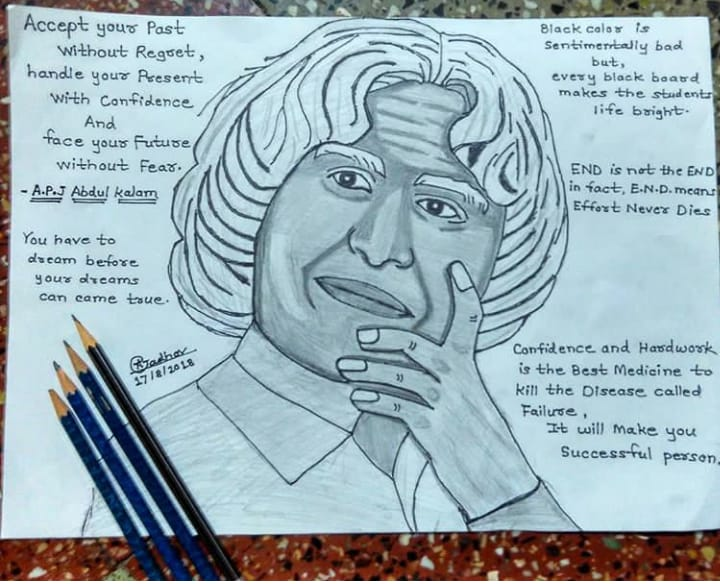

Abdul Kalam, in full Avul Pakir Jainulabdeen Abdul Kalam, (born October 15, 1931, Rameswaram, India—died July 27, 2015, Shillong), Indian scientist and politician who played a leading role in the development of India's missile and nuclear weapons programs. He was president of India from 2002 to 2007.
Born: October 15, 1931 Rameswaram India Died: July 27, 2015 (aged 83) Shillong India

| Year | Awards |
|---|---|
| 1981: | Padma Bhushan |
| 1990: | Padma Vibhushan |
| 1997: | Bharat Ratna |
| 1998: | Veer Savarkar Award |
| 2000: | SASTRA Ramanujan Prize |